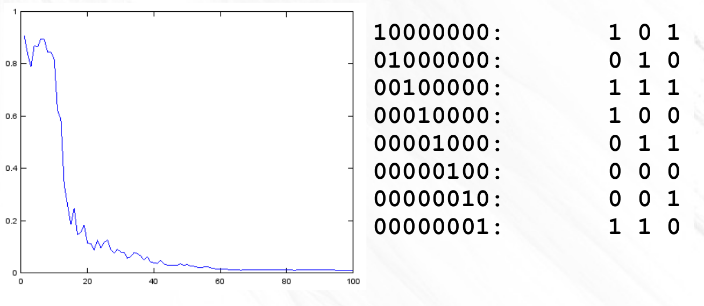

Aprendizagem Automática
Multi Layer Perceptron
Ludwig Krippahl
Multi Layer Perceptron
Summary
- Perceptron and linear discrimination
- Multilayer Perceptron, nonlinear discrimination
- Backpropagation and training MLP
- Regularization in MLP
Multi Layer Perceptron
Perceptron
Perceptron
Inspired on the neuron:

BruceBlaus, CC-BY, source Wikipedia
Perceptron
Action potential is "all or nothing"
Chris 73, CC-BY, source Wikipedia
Perceptron
- Model neuron as linear combination of inputs and non-linear function
Chrislb, CC-BY, source Wikipedia
Perceptron
- Orginal perceptron combined a linear combination of the inputs and a threshold function:
- Note: we can include
w0 inw⃗ as before.
Training rule for the original perceptron:
- Adjust weights slightly to correct misclassified examples.
- Greater adjustment to those with larger inputs.
- Problem: not differentiable. But there are alternatives.
Perceptron
- To use in multiple layers, need continuous derivative (E.g. sigmoid)


Perceptron
- Strictly speaking, perceptron is the original, single layer, network model by Frank Rosenblatt (1957), with threshold activation.
- However, the term is often also used for neurons with continuous threshold functions, such as in the the multilayer perceptron
- In this course, we will not worry about the name...
Aprendizagem Automática
One Neuron
Single Neuron
- Can classify linearly separable sets, such as the OR function
Single Neuron
Training a single neuron
- Minimize quadratic error between class and output
- Like perceptron, present each example and adjust weights.
Single Neuron
Training a single neuron
- Gradient of the error wrt
w :−δEjδwi=−δEjδsjδsjδnetjδnetjδwi - Update rule (
η generally between 0.1 and 0.5):
Single Neuron
Intuitive explanation:

Single Neuron
Stochastic Gradient Descent
- Online learning: one step per example, in random order

Single Neuron
Stochastic Gradient Descent
- Batch training: add
Δwji for batch, then update.

Single Neuron
- OR: error per epoch, classifier.
Single Neuron
- Cannot classify non-linearly separable sets (e.g. XOR function)
Single Neuron
- XOR: error per epoch, classifier.
Aprendizagem Automática
Multilayer Perceptron
Multilayer Perceptron
- We can solve the XOR problem with a hidden layer
Multilayer Perceptron
Fully connected
Feed-forward
Input layer:
Hidden layer:
Output layer:
(all sigmoidal)
Multilayer Perceptron
Training a Multilayer Perceptron
- Output neuron
n of layerk receives input fromm from layeri through weightj - Same as single neuron but using output of previous instead of
x - Compute
δ for each neuron
Multilayer Perceptron
- For a weight
m on hidden layeri , we must propagate the output error backwards from all neurons ahead - Gradient of error w.r.t. weight of output neuron:
- Propagate back the errors of all forward neurons (and compute
δ ):
Multilayer Perceptron
Intuitive explanation:

Multilayer Perceptron
Backpropagation Algorithm
- Propagate the input forward through all layers
- For output neurons compute
- Backpropagate errors to back layers to compute all
δ - Note:
wpk are weights of "front" neurons connecting to neuroni - Update weights (for forward layers,
x iss of back layer)
Multilayer Perceptron
- XOR problem, one hidden layer
Multilayer Perceptron
- XOR: error per epoch, classifier.

Multilayer Perceptron
- Hidden layer maps inputs to a linearly separable representation.
Multilayer Perceptron
Autoassociator (autoencoder)
- We can use the "reencoding" of the hidden layers for reducing the dimensions.
- Mitchell's binary encoder
- 8 inputs
- 3 hidden neurons
- 8 output neurons
- 10000000 ... 00000001
- Training:
- Backpropagation, forcing output to be the same as input
Mitchell 1999
Multilayer Perceptron
Autoassociator (autoencoder)

Multilayer Perceptron
MLP, in practice
- Start with random values close to zero (sigmoidal function saturates rapidly away from zero)
Multilayer Perceptron
MLP, in practice
- Start with random values close to zero (sigmoidal function saturates rapidly away from zero)
- Since weight initialization and order of examples is random, expect different runs to converge at different epochs
Multilayer Perceptron
MLP, in practice
- Start with random values close to zero (sigmoidal function saturates rapidly away from zero)
- Since weight initialization and order of examples is random, expect different runs to converge at different epochs
- Standardize or normalize the inputs
- (keep scaling factors for classification)
- Since there is only one
η for all dimensions, all values should be on same scale - Also to avoid saturating the sigmoidal function
- The logistic function ouputs in [0,1], so use these class values
- For multiple classes, use multiple output neurons
Multilayer Perceptron
MLP, in practice
- Stochastic Gradient Descent
- Present training examples in random orderr
- One pass through all examples is one epoch
- Evaluate the error,
(t−s)2 , for training or cross-validation - Repeat until convergence or before overfitting (cross-validation)
Multilayer Perceptron
Regularization with early stop
- E.g. 5-fold cross-validation, stop around 40 epochs
Multilayer Perceptron
Regularization by weight decay
- Decrease weight values by a small fraction
- Useless parameters will tend to zero
Aprendizagem Automática
Summary
Multilayer Perceptron
Summary
- Perceptron, classical and continuous output function
- Stochastic gradient descent (squared error)
- One layer vs several layers (multilayer perceptron)
- Training with backpropagation
- Regularization: early stop and weight decay
Further reading
- Mitchell, Chapter 4
- Alpaydin, Chapter 11 (note: linear output)
- Marsland, Chapter 3
- (Bishop, Chapter 5)
Aprendizagem Automática
Multi Layer Perceptron
Ludwig Krippahl